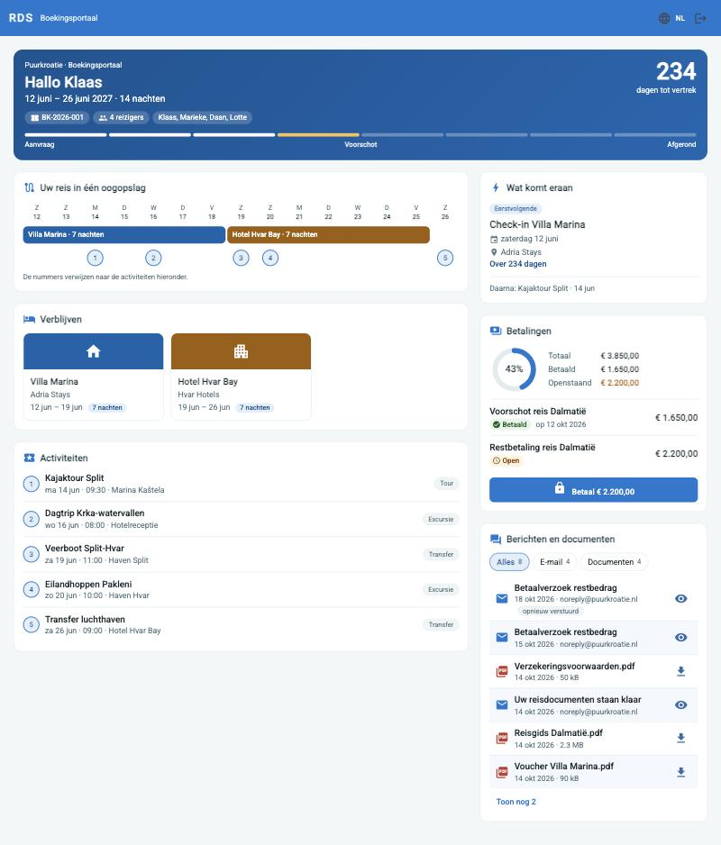
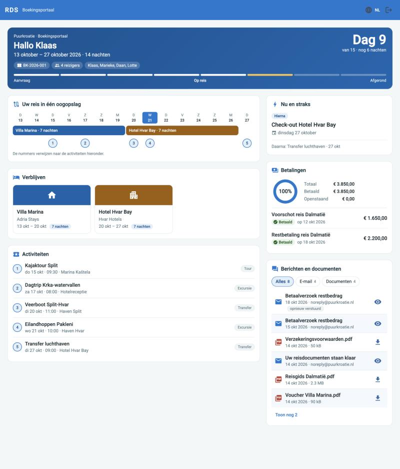
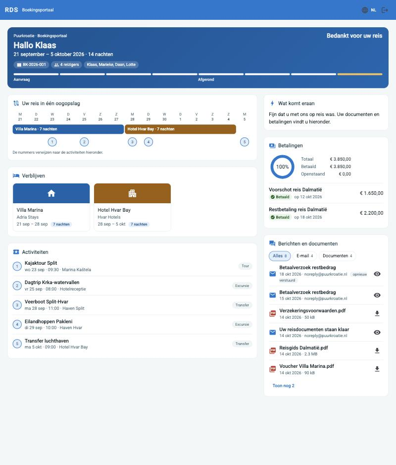
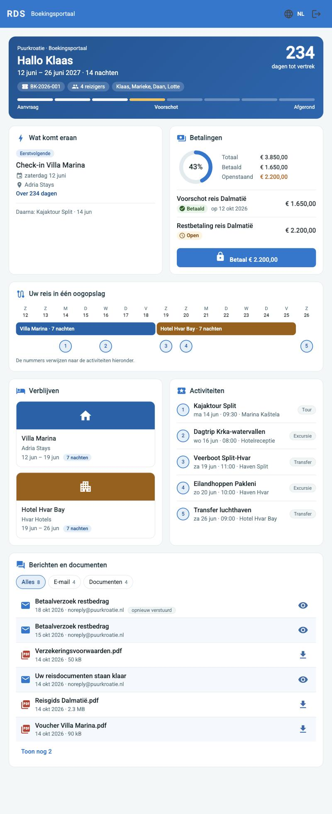
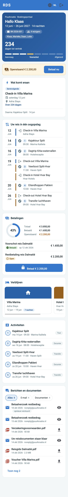
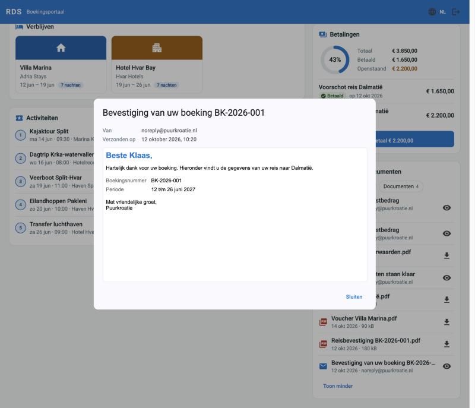

| Status | gebouwd (21-10-2026). Dit document blijft het ontwerp met de afwegingen; de uitgewerkte beschrijving staat in frontend.md en bookerportal.md. Afwijkingen van het voorstel staan onderaan (§11) |
|---|---|
| Datum | 21-10-2026 |
| Doel | in plaats van zes tabbladen waarbij je telkens één onderdeel ziet, één dashboard met veel informatie tegelijk, zonder te klikken, en dat responsive werkt op telefoon, tablet en desktop |
| Raakt | frontend-booker, en in de backend het pakket bookerportal (nieuw overview-endpoint, slankere DTO's, document-download) |
| Zie ook | bookerportal.md, frontend.md, security.md, open-items.md |
ng serve, 21-10-2026), op 1280, 768 en 375 px, voor, tijdens en na de reis en met een geopende e-mail. Ze zijn opnieuw gemaakt na de invoering van de risicokleuren en de om-en-om tint in Berichten en documenten. De gegevens zijn fictief: ze komen van een stub van /api/booker-portal/**, omdat de lokale database niet voor de tooling bereikbaar was. De huisstijl is die van de organisatie Puurkroatie uit de seeddata. De oorspronkelijke schema's staan nog per breedte onder Schema van het ontwerp.Wat de portal-API nu niet levert en dus eerst aan de backend moet worden toegevoegd:
| Ontbreekt | Gevolg voor het dashboard |
|---|---|
| boekingsnummer, status, periode, totaalbedrag | geen kop met de kerngegevens, geen voortgang |
| voornaam van de boeker, reizigers | geen persoonlijke aanhef, geen reizigersoverzicht |
| naam, kleuren en logo van de organisatie | geen huisstijl (de app heeft geen ThemeService; de kleuren zijn nu de standaard-teal) |
| huidige betaalstatus per betaling | de client moet nu zelf de statusregels doorlopen |
| documentgrootte en een aparte download | zie hieronder |
Bestaande zwakke plekken die bij deze klus meegenomen horen:
GET /api/booker-portal/documents geeft per document de volledige bytes (byte[] document) terug. Een dashboard dat alle documenten in één keer laadt zou alle PDF's meesturen.createdBy, modifiedBy en tenantOrganization. bookerportal.md schrijft minimale DTO's voor externe gebruikers voor.| Kaart | Inhoud | Bron |
|---|---|---|
| Kop | aanhef (Hallo Klaas), boekingsnummer, periode en aantal nachten, reizigers (namen), statusbalk met 8 stappen, aftelling | overview (nieuw) |
| Betaalbalk (alleen telefoon) | Openstaand € 2.200 met knop Betaal nu, onder de kop | betalingen |
| Wat komt eraan (tijdens de reis Nu en straks) | de eerstvolgende stap, of tijdens de reis wat er nu en hierna is; na de reis een bedankje | afgeleid uit het reisschema |
| Tijdlijn | balken per verblijf, genummerde punten per activiteit, vandaag-markering; op de telefoon een verticale agenda | itinerary |
| Betalingen | donut (betaald/totaal), totaal-betaald-openstaand, regel per betaling met statuschip, knop Betaal | payments (+ status) |
| Verblijven | kaart per verblijf met naam, plaats, leverancier, periode, aantal nachten | booking-lines |
| Activiteiten | genummerde lijst met datum, tijd, trefpunt, soort | booking-activities |
| Berichten en documenten | de verzonden e-mails en de vrijgegeven documenten in één lijst, nieuwste eerst, met filter; betalingen niet | messages en documents (slank) |
De fase volgt uit de datums, niet uit de status (de status zet een medewerker handmatig).
| Fase | Wanneer | Kop | Wat komt eraan | Tijdlijn |
|---|---|---|---|---|
| Voor de reis | vandaag < vertrekdatum | aftelling (234 dagen tot vertrek) | eerste verblijf of activiteit | geen vandaag-markering |
| Tijdens de reis | vertrek ≤ vandaag ≤ terugkomst | Dag 9 van 15, nog 6 nachten | Nu en Hierna | vandaag gemarkeerd |
| Na de reis | vandaag > terugkomst | Bedankt voor uw reis | een bedankje | zonder markering |
Voor de reis — aftelling, de eerstvolgende stap, de statusbalk op Voorschot en een openstaande betaling:

Tijdens de reis — dag 9 van 15, vandaag gemarkeerd in de tijdlijn, Nu en straks, alles betaald:

Na de reis — bedankje in de kop en bij Wat komt eraan, statusbalk op Afgerond:

Breekpunten (container queries op de pagina): telefoon < 600 px, tablet 600–999 px, desktop ≥ 1000 px.
Desktop (≥ 1000 px) — brede kolom met planning, verblijven en activiteiten; smalle kolom met wat komt eraan, betalingen en berichten en documenten:
Tablet (600–999 px) — twee kolommen: wat komt eraan naast betalingen, de tijdlijn over de volle breedte, verblijven naast activiteiten, daaronder berichten en documenten:

Telefoon (< 600 px) — één kolom in volgorde van urgentie: kop, betaalbalk, wat komt eraan, de tijdlijn als agenda per dag, betalingen, verblijven (zwiepbaar), activiteiten, berichten en documenten. Op de telefoon staan Betalingen en de betaalbalk bovenaan als er iets openstaat; zijn alle betalingen voldaan, dan verdwijnt de balk.

Desktop:
┌──────────────────────────────────────────────────────────────┐ │ KOP: Hallo Klaas · BK-… · 12–26 jun · 4 reizigers · 234 dgn │ │ statusbalk ▮▮▮▮▯▯▯▯ │ ├───────────────────────────────────────────┬──────────────────┤ │ TIJDLIJN │ EERSTVOLGENDE │ │ 12 13 14 15 … 26 (balken + punten) ├──────────────────┤ │ │ BETALINGEN │ ├───────────────────────────────────────────┤ (donut + regels) │ │ VERBLIJVEN (2 kaarten) ├──────────────────┤ ├───────────────────────────────────────────┤ DOCUMENTEN │ │ ACTIVITEITEN (genummerd) │ │ └───────────────────────────────────────────┴──────────────────┘
Tablet:
┌──────────────────────────────────────────┐ │ KOP │ ├────────────────────┬─────────────────────┤ │ EERSTVOLGENDE │ BETALINGEN │ ├────────────────────┴─────────────────────┤ │ TIJDLIJN (balken) │ ├────────────────────┬─────────────────────┤ │ VERBLIJVEN │ ACTIVITEITEN │ ├────────────────────┴─────────────────────┤ │ DOCUMENTEN │ └──────────────────────────────────────────┘
Telefoon:
┌────────────────────────┐ │ KOP (compact) │ │ Openstaand € 2.200 [Betaal nu] │ │ EERSTVOLGENDE │ │ TIJDLIJN (agenda) │ │ 12 jun Check-in … │ │ 14 jun Kajaktour … │ │ BETALINGEN │ │ VERBLIJVEN ◀ swipe ▶ │ │ ACTIVITEITEN │ │ DOCUMENTEN │ └────────────────────────┘
Het oog-icoon bij een e-mail opent het bericht zoals de klant het ontving, in een afgeschermd venster (geen scripts):

Hetzelfde stack als nu (Angular 22, standalone, signals, Material, ngx-translate). Geen nieuwe bibliotheken, met het oog op de bundelgrootte op mobiel.
frontend-booker/src/app/
core/portal/portal.store.ts signals + computed (fase, aftelling, tijdlijn, totalen, eerstvolgende)
core/portal/portal.service.ts API-aanroepen (overview, betalingen, documenten)
features/dashboard/
dashboard.page.ts grid met areas per breekpunt
trip-hero.component.ts kop, statusbalk, aftelling
next-up.component.ts eerstvolgende / nu
trip-timeline.component.ts balken + punten (≥ 600 px) of agenda (< 600 px)
stays.component.ts verblijven (scroll-snap op telefoon)
activities.component.ts
payments.component.ts donut, regels, betalen, statuspolling (zoals nu, 2,5 s)
documents.component.ts lijst + download
shared/section-card.component.ts kaartschil met skeleton / leeg / fout
/login en /verify blijven. Alle oude routes (/itinerary, /documents, …) verwijzen naar / (eventueel met een ankerlink).OnPush en signals overal; geen API-calls in componenten (alleen via de service), conform frontend.md.grid-template-areas, per breekpunt een eigen indeling; geen JavaScript nodig voor de lay-out.BreakpointObserver (CDK) of een container query nodig om de weergave te kiezen.scroll-snap; op tablet en desktop een gewoon grid.env(safe-area-inset-*) voor telefoons met een inkeping.grid-column: start / end, berekend uit de datums. Activiteiten zijn punten in de kolom van hun datum, genummerd zoals in de lijst.stroke-dasharray); de waarden komen uit de totalen. Het percentage staat ook als tekst en in een aria-label.overview-aanroep voor de kop en de kerngegevens; de rest laadt parallel, elk met eigen resource/httpResource en eigen fout- en laadtoestand. Skeletons in plaats van spinners.@defer (on viewport) worden uitgesteld, vooral op telefoon.overview worden op :root gezet als --theme-primary, --theme-accent en --theme-card-title; de afgeleide tinten bestaan al (color-mix in styles.scss). Zonder thema blijft de standaard-teal.prefers-reduced-motion, optioneel prefers-color-scheme: dark.nl.json en en.json; datums en bedragen via DatePipe en CurrencyPipe met de gekozen taal.LocalDate zonder tijdzone. De fase wordt bepaald met de lokale datum van het apparaat.GET /api/booker-portal/overview (BOOKER_PORTAL_READ), gebonden aan het bookingId uit de BookerContext.
{
"booking": { "bookingNumber": "BK-2026-00042", "status": "voorschot",
"fromDate": "2027-06-12", "untilDate": "2027-06-26", "totalSum": 3850.00 },
"booker": { "firstname": "Klaas" },
"travelers": [ { "firstname": "Klaas" }, { "firstname": "Marieke" } ],
"organization": { "name": "Puurkroatie", "primaryColor": "#0e8f8a",
"accentColor": "#e0a100", "cardTitleColor": "#12303b", "logoUrl": null }
}
PortalOverviewDto, record), via een service en MapStruct waar dat past; geen entities en geen interne velden (createdBy, tenantOrganization, …).organization_theme; ontbreekt het thema, dan zijn ze null en geldt de standaard.| Endpoint | Wijziging |
|---|---|
GET /documents | slanke DTO: documentId, displayname, mimeType, size, createdAt; zonder bytes |
GET /documents/{id}/content (nieuw) | levert het bestand; alleen als het document bij de eigen boeking hoort en visibleInPortal is, anders 404; Content-Disposition met de bestandsnaam |
GET /documents/{id} | vervalt of wordt dezelfde slanke DTO |
GET /payments | slanke DTO: molliePaymentId, description, amount, currency, method, currentStatus, createdAt; zonder createdBy, tenantOrganization, interne ids |
GET /payments/status-entries | blijft voor de statushistorie in een uitklapregel |
De overige endpoints (itinerary, booking-lines, booking-activities, accommodations, activities) blijven; het dashboard gebruikt itinerary, booking-lines en booking-activities. Wat daarna ongebruikt blijft, kan in een latere ronde weg.
BookerContext.getBookingId(); een betaling of document van een andere boeking geeft 404/403, zoals nu bij het betalen.NoEntityInApiTest blijft de build bewaken tegen entities in API's.content-endpoint met de juiste Content-Type./api/booker-auth/ verandert niet.Streefwaarden, nog niet gemeten:
overview-aanroep vóór de eerste weergave.Tests: Jasmine-specs voor de store (fase, aftelling, tijdlijnmodel, betaaltotalen, eerstvolgende), voor de weergave per breekpunt en voor de leeg- en foutstanden. Daarna echte screenshots met de Claude Preview-tools bij 375, 768 en 1280 px.
| Stap | Inhoud | Resultaat |
|---|---|---|
| 0 | overview-endpoint, slanke documenten en betalingen, document-download, backendtests | API klaar; oude UI blijft werken |
| 1 | schil en PortalStore, kop, betaalbalk en betalingenkaart | meeste waarde: kerngegevens en betalen op één scherm |
| 2 | tijdlijn (balken en agenda), Eerstvolgende/Nu, fasesturing | het hart van het dashboard |
| 3 | verblijven, activiteiten, documenten (met download), skeleton-, leeg- en foutstanden | alle informatie op één pagina |
| 4 | organisatiekleuren, toegankelijkheids- en prestatiecheck, oude schermen en routes opruimen | afgerond; docs bijwerken |
Elke stap is los te testen en te reviewen; na stap 1 staat er al een bruikbaar dashboard.
| # | Keuze | Voorstel |
|---|---|---|
| 1 | Aggregator-endpoint of bestaande endpoints hergebruiken? | overview voor kop en kerngegevens, bestaande endpoints voor de rest (minder werk dan alles in één DTO) |
| 2 | Reizigers tonen met achternaam? | alleen voornamen, voor de hoofdboeker zichtbaar |
| 3 | Boekingstitel (bijv. Dalmatië rondreis) | nu niet beschikbaar; de kop toont periode en boekingsnummer. Een titelveld op Booking kan later |
| 4 | Adressen en foto's bij verblijven | niet in deze ronde; de kaarten gebruiken een gekleurd vlak met een icoon. Adressen (voor een kaartlink) of foto's vragen uitbreiding van de portal-DTO |
| 5 | Mobiele navigatie | geen; de pagina scrolt. Optioneel een rij ankerlinks bovenaan bij weinig ruimte |
| 6 | Donkere modus | optioneel, later |
frontend-booker (punt 20): dit voorstel verhoogt de dekking bewust, vooral voor de store en de weergave per breekpunt.Geen wijzigen van gegevens door de klant, geen chat of berichten, geen pushmeldingen, geen offline-modus, geen eigen kaartweergave.
Alle vijf stappen uit §7 zijn in één keer opgeleverd. Verschillen met het voorstel:
| Onderwerp | Voorstel | Gebouwd |
|---|---|---|
| Tijdlijn | balken en agenda | zo gebouwd; overlappende verblijven krijgen een eigen rij, activiteiten van dezelfde dag staan onder elkaar, en een periode langer dan 62 dagen toont alleen de agenda |
| Laden | per kaart een resource/httpResource | een kleine eigen Loadable (signals + RxJS), met stille verversing voor de betaalstatus |
| Betalingen | statushistorie in een uitklapregel | geen uitklap meer (niets verborgen achter een klik); de kaart toont wel wanneer er is betaald |
| Overview | boeking, boeker, reizigers, organisatie | zo gebouwd; de totale som komt uit de boekingsregels en activiteiten |
| Documenten | slanke lijst en download | zo gebouwd (size met octet_length in de query, het bestand via …/content); daarna uitgebreid met de verzonden e-mails: de kaart heet nu Berichten en documenten (/messages, alle mails aan de hoofdboeker, betalingen niet) |
| Betaalbalk | knop start de betaling of brengt je naar de kaart | zo gebouwd |
| Kleur en rijtint | niet uitgewerkt | bekijken en downloaden hebben de risicokleur info (gedempt blauw, act-info); de regels in Berichten en documenten hebben een zachte om-en-om tint (zebra-rows) en de pictogrammen links geen eigen achtergrond. De afbeeldingen in §3 zijn hiermee opnieuw gemaakt. Zie frontend.md |
| Donkere modus, ankerrij op de telefoon | optioneel | niet gebouwd |
| Mobiele test | Lighthouse-score | niet gemeten; wel visueel gecontroleerd op 375, 768 en 1280 px met echte schermen uit de draaiende app (tegen een stub van de API) |
De oude schermen (itinerary, documents, accommodations, activities, payments) en ApiService zijn verwijderd; hun paden verwijzen naar het dashboard. Het verwijderen van GET /api/booker-portal/documents/{id} is een wijziging van het contract: de interface gebruikte dat endpoint niet.